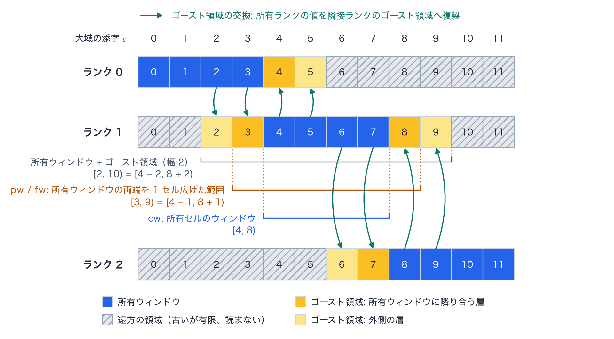

MPI 分割 reference
TENRYU の MPI（Message Passing Interface）による領域分割（domain decomposition）は、1 ランク（rank。MPI のプロセス 1 個）に GPU（graphics processing unit）を 1 個割り当て、各ランクが全体サイズの配列を保持したまま、自分の所有ウィンドウ（owned window）だけを更新する配置をとる。配列を所有ウィンドウだけに圧縮して局所添字で読み替える方式は採らない。分割の境界は、隣接ランクが所有する値の複製であるゴースト領域（ghost region）の交換（halo exchange）で結ぶ。CUDA カーネル（GPU 上で並列に実行する関数）が作用する範囲を明示することで、1 ランクの実行は、全範囲が所有ウィンドウである同じ実装の特殊な場合になる。この計算に固有の用語は用語の節で説明する。
設計原理
前提となる制約は 3 つある。1 MPI ランクに 1 GPU を割り当てること、物理カーネルが決定論的（deterministic）であること、CUDA カーネルが明示的な添字範囲の上に記述されていることである。採用した配置では、すべてのランクが全体サイズの配列を保持しつつ、各ランクはひとつのウィンドウだけを所有する。メモリと引き換えに、単純さと安全性を得る設計である。局所添字への読み替えの誤りが生じず、1 ランクでの実行は全範囲をウィンドウとする同一のコードそのものであり、演算子を MPI に対応させるには、その CUDA カーネルが作用できる範囲を狭めればよい。
それでも、ステンシル（stencil。1 つの値を求めるために読む近傍の点の組）を使う物理には、隣接ランクの状態が必要である。2 層のゴーストが、複数ランクでの検査（監査）を済ませたすべてのステンシルを覆う。幅を決めるステンシルは 2 つある。1 つは 1D の市松模様（checkerboard）の PQ フィルタで、圧力に人工粘性（artificial viscosity）による圧力を加えた全セル圧 \(P+Q\) に掛ける奇偶（odd–even）フィルタである。セル \(i\) の値を求めるのに、\(P+Q\)、密度 \(\rho\)、流体が有効なセルの印（hydro_active）を \(i\pm2\) のセルまで読む。もう 1 つは電子の奇偶流束（electron odd–even flux）で、1D の電子エネルギー \(e_e\) に適用する、市松ノイズ抑制の保存的な面のフィルタである。セル \(i-1\) とセル \(i\) のあいだの面に流束を立てるかどうかは、面の両側のセルに加えて、その外側のセルも 1 つずつ参照して判定するので、この面の流束はセル \(i-2\ldots i+1\) の \(e_e\) を読む。所有ウィンドウの端のセルの更新は、これらを所有ウィンドウの外側 2 セルまで読む。共有される節点の面には所有側で上書きする規則を用いるので、節点の値がひとつに定まる。ゴーストは所有側の値の複製であり、所有側の値と併合されることはない。
再現性と対応範囲も明示している。所有部分は通常 MPI_Allreduce(SUM) で結合するため、ランク数が異なる実行のあいだでのビット単位の一致は一般には約束しない。ランク数を固定すれば、決定論的なカーネルは決定性を保つ。複数ランクに対する監査が済んでいない機能は、誤って実行されることがなく、実行の開始時にエラーで止まる。遠方のセルは設計上「古いが有限」であってよい一方、物理の計算がそれを読んではならない。各 CUDA カーネルの起動範囲は、そのカーネルが読み書きしてよい範囲を表すので、範囲の外を読んでいないことを、ランク数を変えた実行の比較で検査できる。
cw、nw、pw、fw: 配列の複製ではなく、CUDA カーネルを起動する範囲の役割を表す — ソースコードにだけ現れる局所変数名で、namelist にも出力ファイルにも現れない。各ウィンドウの範囲と用途は、所有ウィンドウによる分割の節の表にある。- 2 層のゴースト: \(i\pm2\) を参照する市松模様の PQ フィルタと、\(i-2\ldots i+1\) に届く電子の奇偶流束が幅を決めており、監査済みの 1 層ステンシルもその内側に収まる。
- 共有される節点の面: 隣り合うランクが同じ節点を計算する場合でも、所有側での上書きによって、節点の値がひとつに定まる。
- 2D の配置: 平坦化した添字（flattened index）\(c=i\,n_z+j\) では、r 方向のスラブが大域配列の連続した領域になる。
この計算で使う用語
TENRYU の MPI 実装は、各ランクが全体サイズの配列を持つ配置をとるので、どの要素を誰が更新し、どの要素が誰からの複製であるかを表す語が要る。ここに挙げる用語は、この配置に固有の意味で使うので、まとめて定義する。ランク、集団通信、非ブロッキング通信など、MPI で一般に使う語は説明しない。
所有ウィンドウ
所有ウィンドウ（owned window）は、1 ランクが更新する、平坦化した添字の連続区間 [begin, end) である（図Aの青いセル）。平坦化した添字は、2D_RZ では \(c=i\,n_z+j\)（\(i\)、\(j\) は r 方向と z 方向のセルの番号、\(n_z\) は z 方向のセル数）、1D_SPH では動径方向のセルの番号そのものである。r スラブに分けると、スラブが平坦化した添字の連続区間になるので、所有ウィンドウで表せる。所有ウィンドウはセルと節点にそれぞれあり、全ランクのセルの所有ウィンドウは、重ならずに全セルを覆う。節点の所有ウィンドウは、隣り合うランクの境界で 1 つの節点の面を共有する（共有される節点の面と所有側上書き）。
各ランクは全体サイズの配列を持つので、CUDA カーネルには更新してよい範囲を (begin, end) で渡す必要がある。範囲を明示すると、所有ウィンドウで起動する CUDA カーネルは、各セルをちょうど 1 つのランクで更新する（全ランクが全線を計算する複製計算の段を除く）。範囲の外の古い値を計算に使う誤りは、ランク数を変えた実行の比較で差として現れる（検証）。1 ランクの実行では、所有ウィンドウは全範囲 [0, n) になる。
1D_SPH はセル列を、2D_RZ は r 方向を、ランク数（mpirun の -n に指定する値）に等しい枚数のスラブに分ける。2D_RZ で Parallel.decomposition.dims を指定するときは [ランク数, 1] に限り、指定しないときはドライバがこの値にする。セル数をスラブ数で割った余りは、番号の小さいランクから 1 セルずつ割り当てる。各ランクの所有セル数は Parallel.decomposition.min_cells_per_rank（既定 8）以上でなければならない。1D ではセル数がランク数とこの値の積に満たないとき、2D では r 方向のセル数をランク数で割った商（切り捨て）か z 方向のセル数がこの値に満たないとき、初期化で停止する。Studio は Parallel ブロックを書き出さないので、これらの既定値はデッキ（deck）で指定しないときの値である。
実装では、所有セルのウィンドウを State::owned_cell_window(n)、所有節点のウィンドウを State::owned_node_window(n)、所有セルの両端を隣接ランクのある側へ広げたウィンドウを State::owned_cell_window_ghost(n, stride) が返す。呼び出し箇所では、これらを受ける局所変数を cw、nw、pw、fw と書く（pw と fw は、流体と ALE（arbitrary Lagrangian–Eulerian、任意ラグランジュ・オイラー法）の実装で owned_cell_window_ghost の結果を受ける変数名である）。広げる幅は、隣接ランクがある側だけに、1D ではセル 1 個、2D では r 方向の 1 行（\(n_z\) 個のセル）である。各ウィンドウの用途は所有ウィンドウによる分割の節の表にある。
ゴースト領域とゴースト幅
ゴースト領域（ghost region）は、所有ウィンドウのすぐ外側にある、隣接ランクが所有する値の複製である。別の局所配列ではなく、大域の添字位置にそのまま置く（図Aの黄色のセル）。実装と namelist のキーでは halo という名前も使う（halo_exchange、Parallel.halo）。
ゴースト幅（ghost width）は、所有ウィンドウの外側に持つ層の数である。1D ではセル 2 個、2D では r 方向の 2 行で、実装ではランク数が 2 以上のとき PartitionInfo::ghost_layers が 2 に固定され、1 ランクでは 0 である。リポジトリの docs/NUMERICS.md §12.2.1 はこの幅を \(n_{ghost}\) と書くが、コードに同名の識別子はない。namelist のキー Parallel.halo.ghost_layers（既定 1）は読み込まれて 1 以上かどうかを検査されるが、幅の決定には使われない。
幅 2 は、所有ウィンドウの端のセルの更新が読む最も遠い位置で決まる（設計原理）。ゴースト領域は、所有ランクが書いたあと最初にゴーストを読む処理の前に、交換して更新する（ゴースト領域の交換）。幅が 2 層より小さいと、最も広いステンシルが所有ウィンドウの外の古い値を読む。
共有される節点の面と所有側上書き
共有される節点の面（shared node plane）は、スラブの境界にあって、隣り合う 2 ランクの節点の所有ウィンドウの両方に入る節点の集まりである（r 方向の節点番号が一定の節点すべて。1D では節点 1 個）。節点の所有ウィンドウは、セルの所有ウィンドウより r 方向に節点 1 面だけ長いので、境界の節点の面は両側のランクに含まれる。両ランクは同じ入力から同じ式でこの節点を計算する。
所有側上書き（owner overwrite）は、共有される節点の面の値を、2 ランクのうち番号の小さいランクの値に統一する規則である。節点の交換のとき、番号の小さいランクの値で、番号の大きいランクが持つ同じ節点の値を上書きする。この規則によって、境界の節点の位置と速度は、両側で同じビットパターンになる。セルの所有ウィンドウは重ならないので、セルにこの規則は要らず、ゴースト領域のセルが所有ランクの値で上書きされる。
遠方の領域と「古いが有限」
遠方の領域（far region）は、所有ウィンドウとゴースト領域の外側にある領域である。全ランクが全体サイズの配列を持つので、この領域の要素も存在するが、交換では更新されない（図Aの斜線のセル）。
古いが有限（stale-but-finite）は、遠方の領域の値に課す条件である。値は古くてよいが、有限でなければならず、所有ウィンドウの計算結果、収束の判定、再試行の判定、診断量のいずれにも影響してはならない。メッシュ全体を走査する CUDA カーネル（たとえばメッシュの幾何の再計算）は、遠方の領域に有限だが意味のない値を作ってよい。この条件が成り立つように、内積・最小・最大・総和の部分和は必ず所有ウィンドウに限り、メッシュの妥当性の検査も所有ウィンドウとゴースト領域だけで行う。
複製計算
複製計算（replicated computation）は、全ランクが同じ段を、同じ入力から同じ順序で重複して計算する方式である。実装の変数名（replicated_radiation_1d など）とリポジトリの docs/NUMERICS.md §12.4 は、replicated（複製）と呼ぶ。1D では、輻射（流束制限拡散（flux-limited diffusion、FLD）と離散座標法（discrete ordinates、SN））、燃焼、電子の陰解法とイオンの熱伝導、レーザーの光線追跡（ray tracing）の段に使い、2D ではレーザーの光線追跡に使う。段の前に、所有ランクの値を MPI_Allgatherv で全ランクの全線（2D では全メッシュ）に集めるので、入力は 1 ランクの実行と同じ値になる。結果がランク数の影響を受けず、MPI_Allreduce(SUM) の結合順序も入らないので、ビット単位の一致を検査できる。計算量は 1 ランクの実行と同じで、ランク数を増やしても、この段は速くならない。
先送りの保護と監査
先送りの保護（deferral guard）は、複数ランクでの使用に必要な検査をまだ終えていない機能を、ランク数が 2 以上のときにエラーとして拒否する処理である。検査を終えていない機能を実行すると、遠方の領域の古い値の参照や、ランク間の集団通信の不一致（デッドロックの原因になる）を見逃す。
この頁と実装の注釈が監査（audit）と呼ぶ検査は、その機能の CUDA カーネルが所有ウィンドウの外を読まないこと、交換が所有ウィンドウを書いた直後で最初に読む処理の前にあること、集団通信（collective communication）の呼び出しの順序と回数が全ランクで一致することの確認である。
エラー文は、現在の MPI 実装を「MPI v1」と呼ぶ（MPI v1: 1D void regions are not supported multi-rank yet など）。拒否は、ドライバが実行の開始時に行うものと、その機能の演算子が最初に呼ばれたときに行うものがある。拒否する機能の一覧は、複数ランクで拒否する機能の節の表にある。
判定の段階（ビット単位の一致、帯、包絡）
ランク数を変えた実行の検査（ctest のラベル mpi_gate）は、実行の終了時に各ランクが書く所有ウィンドウのダンプ（TENRYU_MPI_DUMP_OWNED で出力する）を、1 ランクの実行の同じ範囲と比べる（tests/parallel/run_parallel_gate.py）。比べる場は、密度、電子とイオンのエネルギーと温度、質量、体積、節点の位置と速度、輻射エネルギー、レーザーの沈着、人工粘性圧である。比べ方には次の 3 つの段階があり、試験ごとに 1 つを割り当てる。
- ビット単位の一致（bit）: すべての場の全要素が、1 ランクの実行と完全に等しい。1D の試験に使う。
- 帯（band）: 各ランクの所有ウィンドウについて、場ごとに、1 ランクの実行との差の最大値を、1 ランクの実行の場全体の絶対値の最大値で割った値が、許容値以下である。許容値は、2D の SN と 2D の燃焼の試験で \(10^{-13}\) である。
- 包絡（envelope）: 2D の LaserMesh の試験に使う。レーザーの沈着以外の場は、許容値 \(10^{-12}\) の帯で比べる。レーザーの沈着は、1 ランクの実行を 3 回行い、実行どうしの差から 3 つの統計量（差のある要素の ULP（unit in the last place、浮動小数点数の最下位ビットの 1 単位）距離の最大値、差のある要素の数、それらの要素が沈着量の総和に占める割合）を実行の組ごとに求め、それぞれの最大値に余裕係数 4 を掛けて上限を作る。この上限が下限（4 ULP、8 要素、割合 \(10^{-12}\)）より小さいときは、下限を使う。複数ランクの実行と 1 ランクの実行の沈着の差から同じ 3 つの統計量を求め、それがこの上限と、
tests/parallel/gate_caps.jsonに記録した固定の上限（250 ULP、10500 要素、割合 1）の両方以下であれば合格である。光線の記録（TENRYU_LM_INVARIANT_DUMP）は、全ランクと 1 ランクの全実行で、バイト単位で一致しなければならない。
1D のスナップショットの試験（tests/parallel/run_snapshot_gate.py）は、出力ファイルの全数値データ（metadata を除く）を、1 ランクの実行とビット単位で比べる。検証の頁の再現性の検査に、再現性の検査の全体の分類がある。
所有ウィンドウによる分割
1D_SPH は、大域のセル列を連続する動径方向のスラブへ静的に分割する。2D_RZ は r 方向のスラブで分割し、平坦化した添字 \(c=i\,n_z+j\) の上で各スラブが連続区間になるようにする。複数ランクの 2D の実行は r スラブに限り、z 方向の分割と 2 方向の分割はドライバが拒否する。局所的に詰めた配列への添字変換は行わない。すべてのランクが全体サイズの配列を確保するため、所有していない領域も同じ添字で参照できるが、物理状態を更新する権限は所有するランクだけがもつ。
実装中に現れる短いウィンドウ名（所有ウィンドウの用語）は、別々の配列を意味するのではなく、CUDA カーネルを起動する添字範囲の役割を表す。表に各ウィンドウの範囲と用途を示し、図Aにランク 1 の範囲の例を示す。
| ウィンドウ | 範囲と用途 |
|---|---|
cw | State::owned_cell_window(n)。所有セルの更新、診断量の部分和、内積・最小・最大の局所項に使う。 |
nw | State::owned_node_window(n)。所有節点の位置と速度の更新に使う。共有される節点の面では両側で同じ式を評価し、交換時に所有側で上書きすることで節点の値を確定する。 |
pw | State::owned_cell_window_ghost(n, stride) を受ける呼び出し箇所の名前の 1 つで、fw と同じ範囲である。所有ウィンドウの両端を、隣接ランクがある側だけ 1 セル（2D では r 方向の 1 行）広げた範囲で、近傍ステンシルの生成側や中間量を、所有ウィンドウのすぐ外側まで計算する段で使う。 |
fw | State::owned_cell_window_ghost(n, stride) による所有+ゴーストの範囲である。所有ウィンドウの両端を、隣接ランクがある側だけ stride 個広げる（stride は 1 行のセル数で、1D では 1、2D のセルでは z 方向のセル数 \(n_z\)）ので、2 層のゴーストのうち、所有ウィンドウに隣り合う 1 層だけを含む。たとえば 1D で所有セルが [4, 8) のランクでは [3, 9) である。界面上の節点に両側のセルからの寄与が必要な力の散布や、ゴースト領域の派生量に使う。 |

pw と fw の範囲 [3, 9)、cw の範囲 [4, 8) である。pw と fw が含むゴースト領域は隣り合う層だけで、外側の層（セル 2 と 9）は含まない。隣接ランクのない側は広げないので、ランク 0 の pw と fw は [0, 5)、ランク 2 は [7, 12) である。2D_RZ の r スラブでは、1 マスが r 方向の 1 行（\(n_z\) 個のセル）に当たる。所有セル数 4 は実装が許す最小値（ゴースト幅の 2 倍）で、既定の Parallel.decomposition.min_cells_per_rank（8）では 12 セルを 3 ランクに分けられない（この配置を走らせるには 4 以下に指定する）。ゴースト領域の交換
ゴースト幅は 2 層である（ゴースト領域とゴースト幅）。1D の市松模様の PQ フィルタと電子の奇偶流束が所有ウィンドウの外側 2 セルまで参照し、1D の熱伝導の面の係数（所有ウィンドウに隣り合う 1 層のセルまで計算する。熱伝導の空間離散化参照）、流体のコーナー力（corner force）の散布（ラグランジュ流体参照）、Winslow リゾーン反復（Winslow rezoning iteration。ALE 参照）が必要とする 1 層も、この幅に含まれる。ゴーストは別の局所添字の領域ではなく、所有ウィンドウに隣接する大域の添字位置である。交換後は所有側の値とビット単位で一致する。
遠方の領域（古いが有限）の値は、古くてよいが有限でなければならず、所有ウィンドウの計算結果、収束の判定、再試行の判定、診断量へ影響してはならない。このため、内積・最小・最大・総和の部分和も、必ず所有ウィンドウに限る。
交換は「所有ウィンドウを書いた直後、最初にゴーストを読む処理より前」の位置に段階的に置く。流体の入口では、エネルギー、質量、圧力、温度、密度、平均電離度といったセルの場を交換し、予測子・修正子（predictor–corrector）で位置を確定した直後には節点の位置と速度を交換する。交換の実装には、2 方向に分割した 2D のための、斜め隣接のランクとのコーナーの交換もある。ただし複数ランクの 2D の実行は r スラブに限られるので、実際に行う交換は左右の隣接ランクとの交換だけである。GPU 対応の MPI（CUDA-aware MPI）では、デバイス上で詰め込み（pack）、MPI_Isend/MPI_Irecv、MPI_Waitall、デバイス上での取り出し（unpack）の順に進む。GPU 対応の転送が使えない環境では、ホストを経由した中継（host staging）を挟む。
ウィンドウ化した CUDA カーネル
更新用の CUDA カーネルは (begin, end) を受け取り、スレッド局所のオフセットではなく absolute_index = begin + tid（tid はスレッドの番号）を使う。したがって軸や外側境界の判定は大域の添字で行われ、1 ランクの実行と同じ意味をもつので、内部のランクが誤って物理境界用の分岐に入ることはない。セルの更新は cw、節点の更新は nw を使い、ステンシルの入力になる派生量や界面への散布では、必要な場合にかぎり pw/fw へ広げる。
2D 流体のコーナー力は fw の上で所有セルとゴーストセルの寄与を積み上げるため、共有する節点に必要な両側からの力が各ランクで局所的にそろい、コーナー力のための MPI 交換を追加する必要がない。2D の燃焼の荷電粒子拡散（Burn.scheme="diffusion"。核燃焼参照）の共役勾配法（conjugate gradient、CG）は、内積を所有ウィンドウの部分和と MPI_Allreduce(SUM) で求め、探索方向（search direction）を反復ごとにゴースト領域で交換する。2D の多群拡散輻射は、ランク分割を持たない演算子で解くので、複数ランクでは拒否する（複数ランクで拒否する機能参照）。1 ランクでは cw、nw、pw、fw がすべて [0,n) になり、全範囲での起動がそのまま逐次実行の特殊な場合になる。
縮約と再現性
全体のエネルギー、時間刻み、ソルバの内積などは、各ランクが所有ウィンドウで部分値を作り、標準の MPI_Allreduce でまとめる。このように全ランクの値から 1 つの値を作る操作を、この頁では縮約（reduction）と呼ぶ。一般の MPI_Allreduce(SUM) は、ランク数をまたいだ浮動小数点のビット単位の一致を保証しない。加算の結合順序（summation order）は MPI の実装とランク構成に依存するため、ランク数を変えると最下位ビット（least-significant bit）が動く場合がある。リポジトリの docs/NUMERICS.md §12.7.3 は、この変動を許容し、結果の統計的な再現には影響しないとする。
一方、ランク数を変えてもビット単位の一致が要る 1D の段は、縮約に頼らず、各ランクが所有ランクの値を全線に集めて、同じ計算を重複して行う（複製計算）。輻射（FLD、SN）、燃焼、電子の陰解法とイオンの熱伝導、レーザーの光線追跡がこれに当たり、MPI_Allreduce(SUM) の結合順序が結果に入らない。レーザーの沈着は、全ランクが同じ全線の配列をもつので、ランク間で足し合わせず、各ランクが所有するセルにだけ書く。CUDA カーネル内の協調グリッド（cooperative groups）による 2 段固定の縮約も、カーネルの起動構成（ブロック数）が同じであれば決定論的だが、グリッドサイズを変えれば加算の順序も変わるため、許容誤差の範疇の変更になる。したがって「MPI 実行はすべてビット単位で一致する」という包括的な主張はしない。
複数ランクで拒否する機能（先送りの保護）
監査が済んでいない演算子を、ウィンドウ化した状態に対して暗黙のうちに実行すると、遠方領域の参照や集団通信の回数の不一致を見逃してしまう。このため、未対応の機能と n_ranks>1（ランク数が 2 以上）の組合せは、先送りの保護が明示的に失敗させる。拒否は、ドライバが実行の開始時に行うものと、その機能の演算子が最初に呼ばれたときに行うものがあり、namelist の検証では見つからない（検証はランク数を知らない）。次の表に、拒否する機能を示す。
| 機能 | namelist のキーと条件 | 備考 |
|---|---|---|
| 多ブロックメッシュ（multiblock mesh。2D メッシュ） | Mesh. が "single_block" 以外 | r スラブの交換が、単一ブロックの構造格子の添字空間を前提にするため。 |
reale_v2（メッシュの接続関係を作り直すリゾーン・リマップ。ALE 参照） | Numerics. | 1 ランクに限る。 |
| 帯 ALE（band ALE）の物理コーナー輸送（physical corner transport。ALE 参照） | Numerics. が解決後に "physical_corner" になる設定 | 1 ランクに限る。"auto" は、デッキから 1 回だけ解決した値で判定する。 |
| PLIC（piecewise linear interface calculation、区分線形界面法）による材料体積のリマップ | Numerics. | ALE のステップを実行するときに拒否する。 |
| 中点法 | 2D_RZ の Numerics.（既定） | "pc_v0"（予測子・修正子法）を明示する。1D には適用されない。 |
| Braginskii 粘性（プラズマ粘性） | Numerics. | 1D と 2D の両方で拒否する。 |
| 1D のボイド（void）セル（ボイド材料） | cell_is_void が立つセル（Material.is_void の材料だけで満たされたセル）を 1 つでも含む 1D の構成 | ボイドの連なりを全線で走査する処理が、複数ランクに対応していないため。 |
| 1D の適応人工粘性（adaptive artificial viscosity） | Numerics.（Numerics. のとき） | 先頭の衝撃波を全線から探す処理が、複数ランクに対応していないため。 |
| CSW98（Caramana–Shashkov–Whalen 1998）の感度ガード（sensitivity guard） | Numerics. | 1 ランクに限る。 |
| 材料別の保存（per-material conservation） | Numerics. | 材料ごとの状態方程式（equation of state、EOS）への射影が、ランク分割を持たないため。1D と 2D の両方で拒否する。 |
| 2D の電子熱伝導（熱伝導の空間離散化） | 2D_RZ で Numerics.（既定 True） | 2D の熱伝導は節点局所の演算子（node-local operator）で動き、ランクをまたぐ交換を持たないため。 |
| SNB（Schurtz–Nicolaï–Busquet）の非局所熱伝導（SNB） | Numerics. | 1D と 2D の両方で拒否する。 |
| 2D の多群拡散輻射（多群 FLD） | 2D_RZ で Radiation.（既定 True）かつ Radiation.（既定） | ランクをまたぐ交換を持たない演算子で解くため。2D の "sn_transport" と、1D の多群拡散は使える。 |
| CBET（交差ビームエネルギー転送、cross-beam energy transfer。CBET） | Laser.enabled のとき Laser. | 全メッシュにわたる光線の計算を、ランクに分割していないため。 |
| ホット電子（hot electron。ホット電子） | Laser.enabled のとき Laser. | 全メッシュにわたる輸送の計算を、ランクに分割していないため。 |
| 個別ビーム（individual beams） | Laser.enabled のとき Laser. | ビームごとに別の方位角で光線を追跡する検証用の機能で、1 ランクに限る。 |
midpoint_v1 は 2D 流体の既定の時間積分である。現在のドライバは、ランク数が 2 以上の 2D で Numerics.hydro.time_integration="midpoint_v1"（2D の既定値。1D には適用されない）を検出すると、中点法の内部がランク分割されていないことを示す明示的なエラーで拒否する。したがって複数ランクの 2D デッキでは time_integration="pc_v0" を明示する必要がある。電子熱伝導、多群拡散の輻射、中点法は 2D の既定でいずれも有効なので、2D のデッキを複数ランクで走らせるには、Numerics.conduction.enabled=False とし、輻射を "sn_transport" にするか無効にする必要もある。対応していない経路へ黙って退避せず、実行前に構成を止める。
MPI による 1 ステップ
所有ウィンドウの処理を起動する。 各演算子は
cwまたはnwを通じて、所有するセル・節点の範囲だけを更新し、所有する要素だけから部分和を作る。ステンシルの入力を作る範囲を広げる。 ゴースト領域の最も内側の層で中間量を作る必要がある処理は、範囲を
pwまたはfwへ広げる。遠方の領域の要素は、読み書きの対象外のままである。ゴースト領域を更新する。 所有ランクが書き込んだあと、最初にゴーストを読む処理より前に、場をデバイス上で詰め込み、非ブロッキングの送受信（non-blocking send/receive）、待ち合わせ、2 層のゴーストへの取り出し、という順で交換する。GPU 対応の MPI が使えない場合にかぎり、ホストを経由した中継を挟む。
全体量をまとめる。 所有部分のエネルギー、時間刻みの制限、ソルバの内積を、適切な
MPI_Allreduceでまとめる。加算する量には通常SUMを使う。LaserMesh を同期する。 LaserMesh は、レーザーの光線追跡に使う格子である（レーザー参照）。光線追跡の前に、密度、電子温度、平均電離度、物質の体積分率、節点の位置を、1D では全線に、2D では全メッシュに
MPI_Allgathervで集める。1D では、全ランクがこの全線で光線を追跡し（複製計算）、沈着は自ランクが所有するセルにだけ書く。2D の LaserMesh への写像では、各ランクが、所有するセルの値（電子密度、電子温度、平均電離度）、重心、面積、ボイドの印と、所有する節点列の座標を、ほかを 0 にした全格子の配列に書き、1 回のMPI_Allreduce(SUM)で全ランクに集める。各要素に寄与するランクは 1 つだけなので、和は所有ランクの値そのものである。全ランクが、集めた格子から LaserMesh の全節点を同じ手順で写像し、同じ場で光線を追跡する。沈着は、光線が通った流体のセルへ直接置き、自ランクが所有するセルの値だけを残す（ほかのセルは 0 にする）。対応範囲を検査する。 複数ランク向けに CUDA カーネル、交換、集団通信の順序が監査されていない機能は、ドライバが実行の開始時に、または演算子が最初に呼ばれたときに拒否する（複数ランクで拒否する機能）。
ビルドと実行のメモ
| 項目 | 指定 | 意味 |
|---|---|---|
| MPI ビルド | cmake -S . -B build -DTENRYU_ENABLE_MPI=ON | 標準の CMake のオプションで MPI 対応を有効にする（既定は OFF）。 |
| 起動 | mpirun -n N ./build/tenryu run <deck.py> | N 個のランクを起動する。基本の配置は 1 ランク = 1 GPU である。各ランクは、同じノードにあるランクの中での番号を、そのノードで見える GPU の数で割った余りの GPU を使う。 |
| 先送りの保護 | 未対応の機能 + n_ranks>1 | ドライバが実行の開始時（一部は演算子の最初の呼び出し時）に明示的に停止する。黙って別経路へ退避したり、監査のないまま実行を続けたりはしない。 |
検証
- ランク数を変えた実行の検査は、1 ランクの実行を参照とし、デッキごとに判定の段階（ビット単位の一致、帯、包絡）を割り当てる。1D の試験はビット単位の一致、2D の SN と燃焼の試験は帯（許容値 \(10^{-13}\)）、2D の LaserMesh の試験は包絡で判定する。
parallel_halo_exchange_np2とparallel_halo_exchange_np4は、ゴースト領域の交換だけを検査する。各ランクが所有ウィンドウにランク番号を含む整数値を書き、交換後に、所有ウィンドウの外側 2 層が所有ランクの値と厳密に等しいこと、その外側が初期値のまま変わらないこと、共有される節点の面が番号の小さいランクの値になっていること（所有側での上書き）を、整数値の完全な一致で確かめる。調べる分割は、1D のスラブ、2D の r スラブ、2D の z スラブと、4 ランクのときの 2×2 分割（セルだけ。コーナーのゴーストを含む）である。- 1D では、スナップショット・チェックポイント・履歴をランク 0 が全体サイズの配列から書く。各ステップの終わり（とステップ 0 の出力の前）に、所有ランクだけが更新する場（流体、状態方程式の計算結果、セルとともに動く輻射エネルギー、節点の位置と速度）を全ランクで集めるので、出力は所有ランクの値になる（2026-09-26。それより前に複数ランクで書いた 1D の出力とチェックポイントでは、他のランクの所有セルの値が古かった）。輻射駆動のカプセルのデッキ（FLD、燃焼とイオン熱伝導あり、360 セル、6 ns まで）では、1・2・4 ランクのスナップショットがビット単位で一致する。
ctest --test-dir build -L mpi_gate --output-on-failureは、現在 13 ケースの MPI 試験を実行する。内訳を次の表に示す。1 ランクの実行との比較は、スナップショットの 2 件を除く 11 件が所有ウィンドウのダンプで行い、スナップショットの 2 件は出力ファイルの全数値データで行う。
| 試験（ctest の名前） | 対象 | ランク数 | 判定の段階 |
|---|---|---|---|
parallel_gate_、parallel_gate_ | 1D の FLD（2 温度、流体あり） | 2、4 | ビット単位の一致 |
parallel_gate_ | ランクの境界をまたぐ、ほぼ透明な層をもつ 1D の FLD | 2 | ビット単位の一致 |
parallel_gate_ | 1D の SN | 2 | ビット単位の一致 |
parallel_gate_ | 1D の燃焼（輻射なし） | 2 | ビット単位の一致 |
parallel_gate_、parallel_gate_ | 1D の燃焼に、電子の熱伝導（陰解法、またはスーパータイムステッピング（super-time-stepping、STS）。熱伝導の時間積分参照）とイオンの熱伝導を加える。電子温度は 5 keV から 1 keV へ直線的に下がり、イオン温度はその半分である | 2 | ビット単位の一致 |
parallel_gate_ | GXII（激光 XII 号、GEKKO XII。検証参照）の 1D デッキ（レーザー、SN、流体、50 ステップ） | 2 | ビット単位の一致 |
parallel_snapshot_gate_、parallel_snapshot_gate_ | 上の 2 つのデッキ（燃焼と電子の陰解法、GXII）のスナップショット | 2 | 全数値データのビット単位の一致 |
parallel_gate_ | 2D の SN（高温の円板と低温の浴、2 温度の物質と流体を連成、25 ステップ） | 2 | 帯（許容値 \(10^{-13}\)） |
parallel_gate_ | 2D の燃焼（高温の DT（重水素・三重水素、deuterium–tritium）の円板、Burn.scheme="diffusion"、25 ステップ） | 2 | 帯（許容値 \(10^{-13}\)） |
parallel_gate_ | 2D の LaserMesh（Laser.mode="raytrace_3d"、軸方向の 1 ビーム、3 ステップ） | 4 | 包絡（沈着以外の場は許容値 \(10^{-12}\) の帯） |